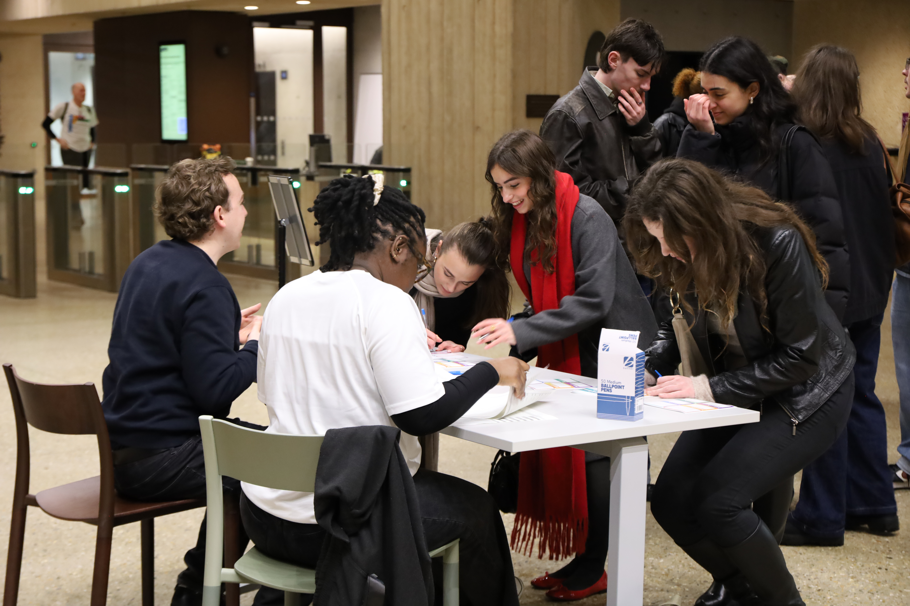
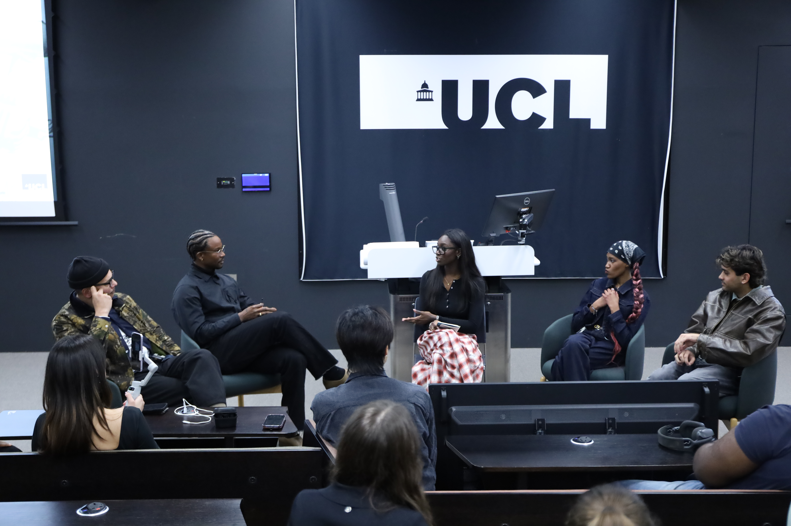
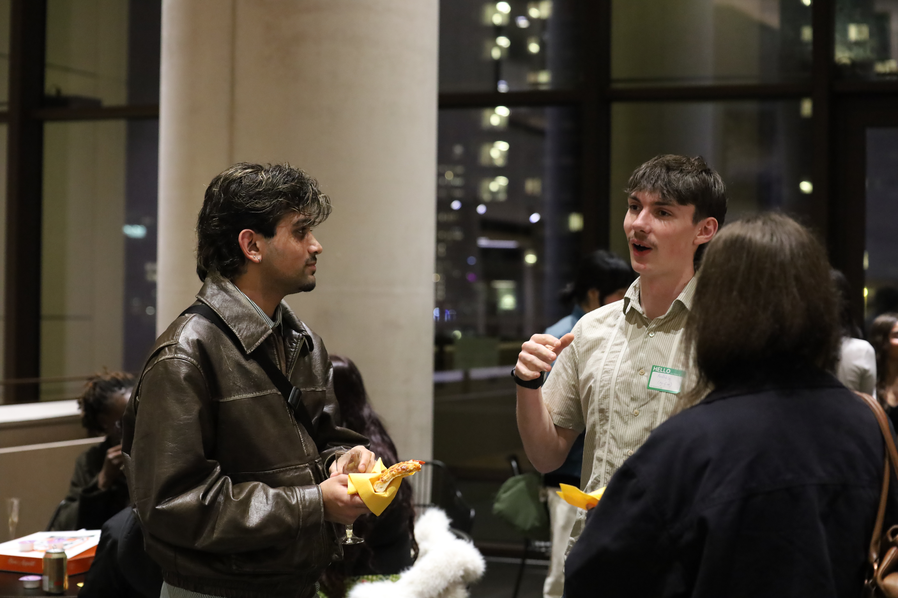
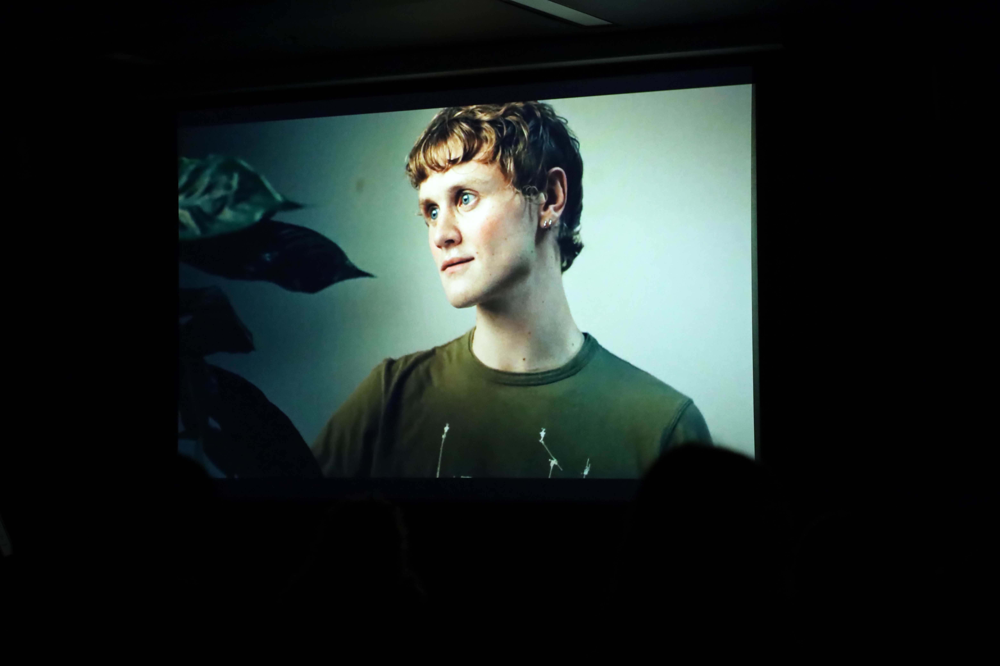

Why this event mattered
Creative industries often rely on informal networks, personal introductions, and knowledge that is not always visible to students at the early stages of their careers. This can create additional access barriers, especially for students from underrepresented backgrounds who may be trying to find collaborators, understand industry pathways, or approach professional spaces with confidence.
This networking event was structured as a student-facing pilot for cross-university networking in film and the wider creative industries. As a case study, its value lies less in showcasing a single event and more in showing why connection itself needs to be treated as part of the event design, rather than as an informal extra.
Design rationale
Why this format was used
The event combined a panel, Q&A, and open networking. This sequence was chosen because networking can feel abrupt when participants are asked to begin conversations without any shared context.
The panel helped reduce unfamiliarity by giving attendees a common starting point and making industry voices visible from the outset. The Q&A created shared topics that could carry into later conversations.
What this suggests for future events
Networking after the panel felt less abrupt than asking students to immediately network with strangers. At the same time, this event did not use a detailed facilitation system such as role tags, structured prompts, or breakout groups.
For future events, this suggests that networking is more effective when it is framed and supported, rather than left entirely informal. Future versions could make this support more explicit through role-based prompts, guided introductions, or clearer participation cues.
Who attended and what this suggests
Institutions represented
What this suggests
- 72% aged 18–23 indicates that the event reached its intended early-stage student audience.
- Representation across eight institutions suggests demand for shared creative spaces beyond a single university.
- 100+ sign-ups but around 40 attendees shows strong initial interest, while also highlighting the need for better attendance conversion, reminders, and post-registration engagement.
What participants were looking for
Who participants wanted to meet
Most participants were open to meeting a range of people, rather than only one type of contact. The most common specific preference was to meet industry professionals.
This suggests that future events should not treat networking only as industry access or only as student community building. Both peer-to-peer connection and professional access matter.
Motivation hierarchy
Participants were not only looking for passive inspiration. Many were looking for practical connections, possible collaborators, and clearer routes into the creative industries.
Creative role interests
Creative role interests reported in the survey:
Role interests
Interests were not concentrated in one role. They spanned both creative leadership and practical production areas, which suggests that future networking formats could benefit from role-based prompts, introductions, or activity groups to help students find potential collaborators more easily.
What we learned
1. Cross-university demand exists
Students attended from eight institutions. Interest clearly extended beyond a single university community.
2. Students want practical connection
The strongest motivation was finding collaborators. Networking needs to support real introductions, not only inspiration.
3. Industry presence helps
Industry speakers and Q&A made pathways feel more concrete, especially for students without existing contacts.
4. Networking needs time
Conversations became more active after the panel, but the networking window was still short.
5. Evaluation needs to be easier
Useful survey data was collected, but the QR-code process could be easier and more visible.
What we would improve next time
This event should be read as a learning record as well as a positive pilot. The next iteration would benefit from a clearer support structure around both participation and follow-up.
- Extend the networking section so conversations are not rushed.
- Prepare a clearer post-event social media and follow-up strategy.
- Make the feedback process easier to access during the event.
- Collect more detailed data on confidence, belonging, and follow-up connections.
- Use role-based prompts to help students find potential collaborators more quickly.
- Plan a clearer post-registration engagement strategy, especially given the gap between 100+ sign-ups and around 40 in-person attendees.
Reusable guidance for future organisers
Checklist for planning a similar event
- Give students from different institutions a clear reason to gather.
- Include industry voices that help make pathways more visible.
- Protect enough time for peer-to-peer connection.
- Use simple data collection to understand who attended and what they needed.
- Plan post-event follow-up that keeps the network active.
- Document the process so learning becomes reusable resources.
- Consider optional role-based prompts or guided introductions to reduce the pressure of informal networking.
This case study should be read as a starting point, not a fixed model. Future organisers can adapt the format depending on audience size, partner institutions, available speakers, and the needs of the student community.
What’s next
This type of event should not remain a one-off. The next stage is to use this case study, participant data, and organiser reflections to inform future Creative Connections networking events and strengthen a repeatable approach.
Planned follow-up
- Post-event write-ups for students and partners.
- A social media content cycle using highlights, quotes, and participant aspirations.
- Follow-up messages to attendees.
- Targeted outreach to film and creative student societies.
- Development of templates and checklists for future organisers.
Long-term aim: to support a sustainable cross-university creative network that increases access, confidence, and collaboration for students entering the creative industries.
Gallery / Media




Resources & Links
Footer CTA
Want to run something similar at your university?
Use the toolkit resources below to plan, adapt, and deliver a student-led event.